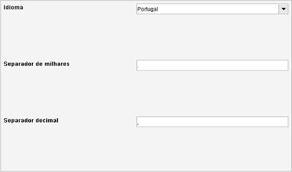

Definições regionais
Caminho de menu: Definições > Definições > Definições regionais

Idioma
Selecione o seu idioma preferido. Aconselha-se que reinicie para ativar completamente a seleção.
Separador de milhares
No número 1,000,000.00 o ponto (.) é o separador de milhares.
Separador decimal
No número 1,000,000.00 a vírgula (,) é o separador decimal.